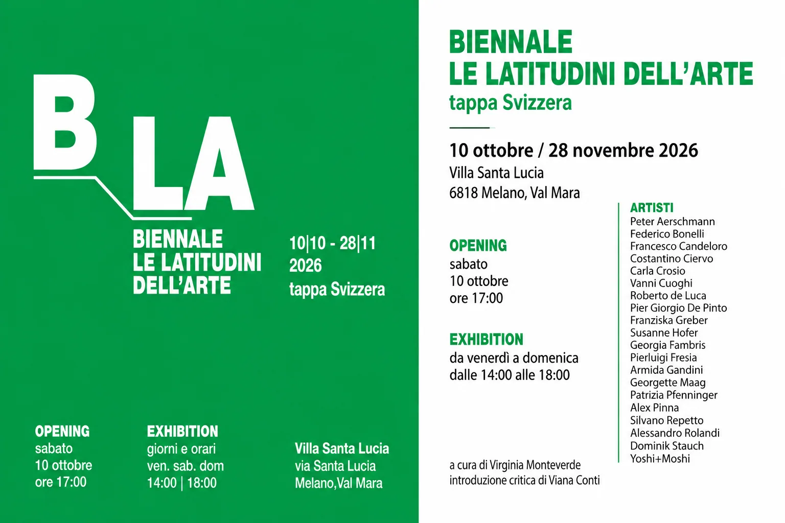
LE LATITUDINI DELL’ARTE / tappa svizzera
10 october – 28 november 2026
opening saturday 10 october 5.00pm
exhibition opening hours
friday to sunday 2.00 pm to 6.00pm
Villa Santa Lucia, via Santa Lucia, Melano, Val Mara
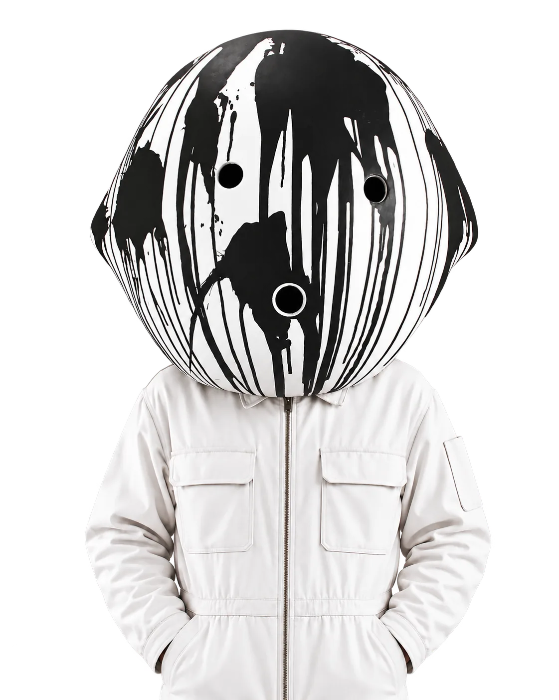
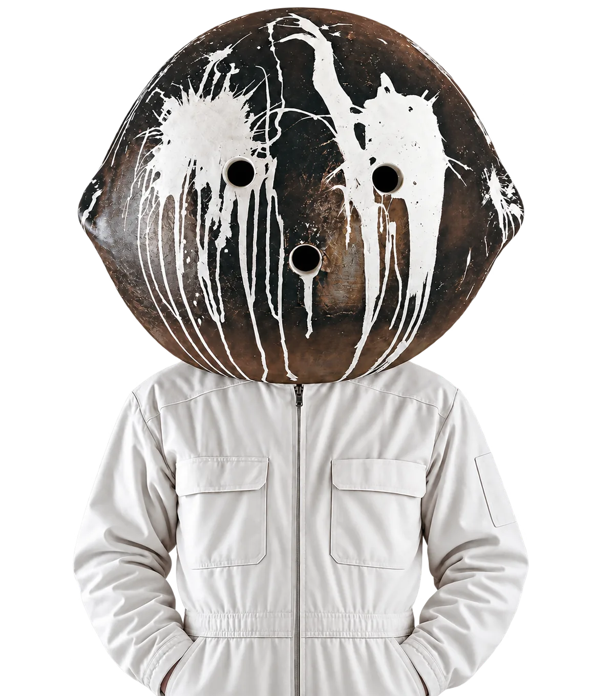
YOSHI + MOSHI / LOG
Latest signals, exhibitions, films and encounters.
Yoshi + Moshi keep showing up. In exhibitions, in films, and sometimes where you least expect them. Not everything makes the news, but some things make it here. Anyway, a few updates below.

LE LATITUDINI DELL’ARTE / tappa svizzera
10 october – 28 november 2026
opening saturday 10 october 5.00pm
exhibition opening hours
friday to sunday 2.00 pm to 6.00pm
Villa Santa Lucia, via Santa Lucia, Melano, Val Mara
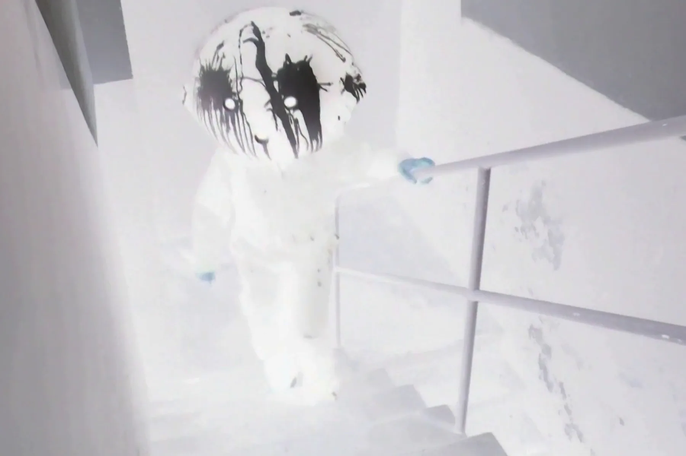
solo show “THE TOWER” (with Nina Staehli / Spotlight Atelier)
with our new film!
15 – 25 January 2026
Kulturhaus Gewürzmühle, Zug (CH)
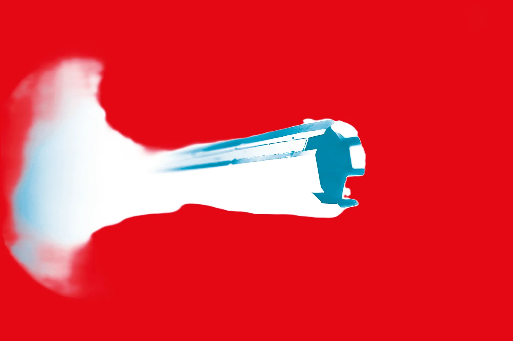
solo show “THE TOWER” (with Nina Staehli)
with our new film!
05 – 28 November 2025
Proyecto’ace, Buenos Aires (ARG)
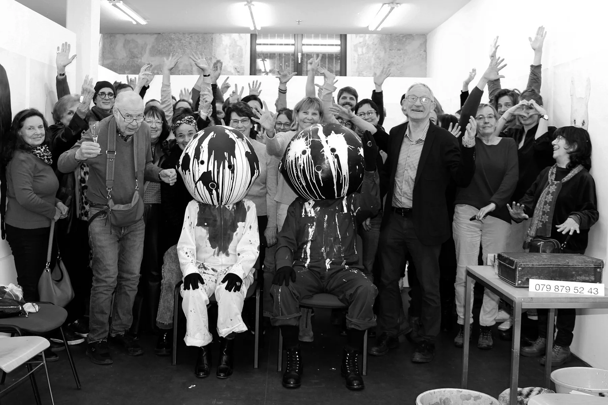
Performance: TRIBUTE – Yoshi, Moshi and Severin Hofer
05 jan 2025, 2.30pm
Billing Gallery, Baar-Zug, Switzerland
OCCUPY SUPERBA
performance, installation + film
6th Biennale Le Latitudini dell’Arte
Italia & Svizzera edition
opening 01 August 2024, 6pm
02 August – 08 September 2024
GALATA Museo del Mare, Genoa, Italy
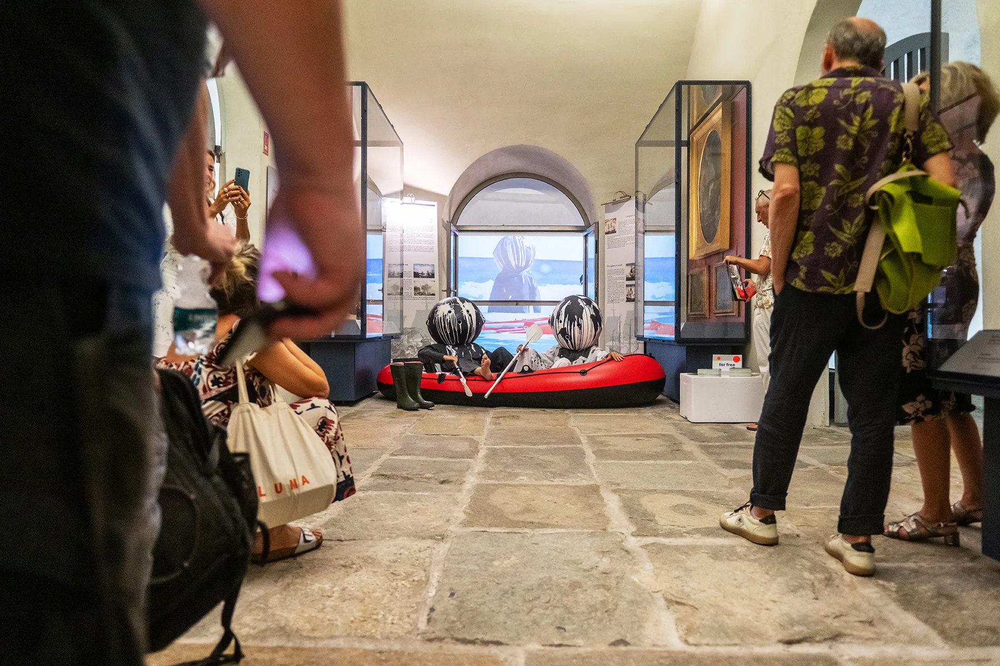
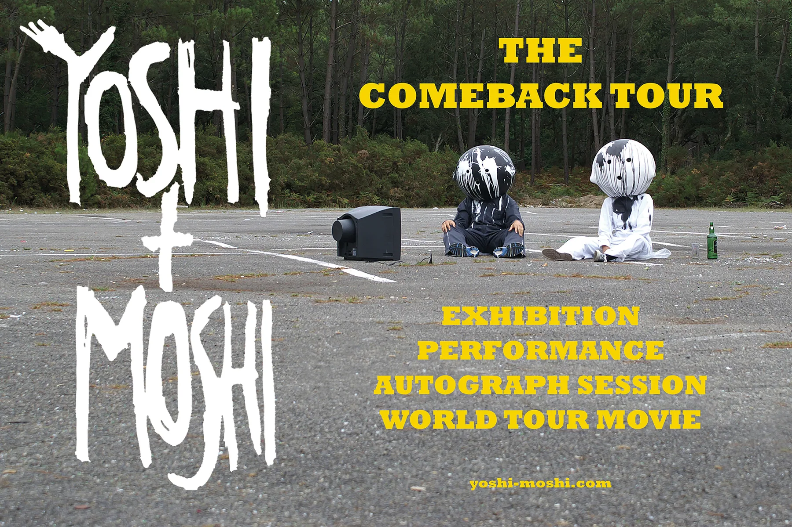
YOSHI + MOSHI
The Comeback Tour
exhibition
performance
autograph session
world tour movie
October 2023
Bar delle Vigne, Vico dei Greci, 4, Genoa, Italy
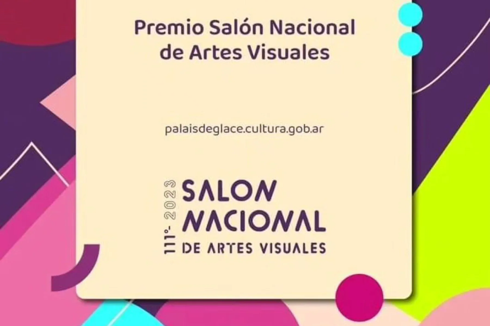
ALEJANDRO THORNTON + YOSHI
Selected artists of the National Visual Arts Salon of Argentina 2023
Alejandro Thornton, Buenos Aires (ARG) is among the best artists 2023 in Argentina. And Yoshi has a starring role in the new “Háblame” film that Alejandro will show in the exhibition. That’s how it goes!
September – December 2023
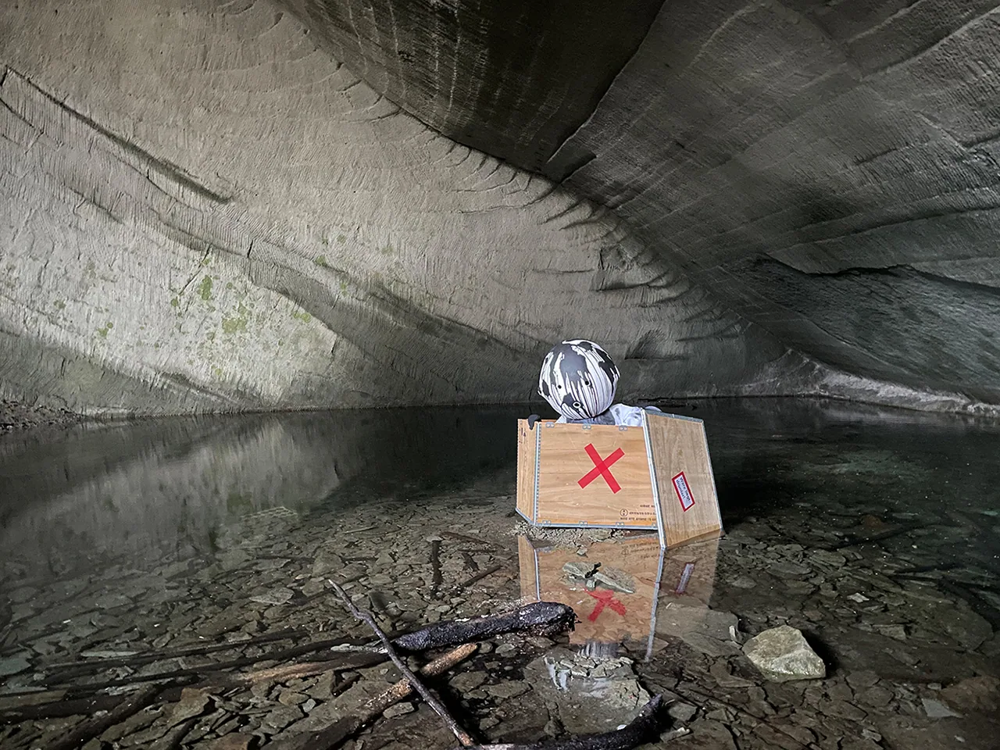
HBLM / TLKM (hablame / talk to me)
duo show
Yoshi (CHE) & Alejandro Thornton (ARG)
Curator: Néstor Zonana
Exhibition text: Rodrigo Alonso
April – May 2023
Pabellón 4 Arte Contemporáneo, Buenos Aires (ARG)
PS: Moshi had to stay home in Chiasso.
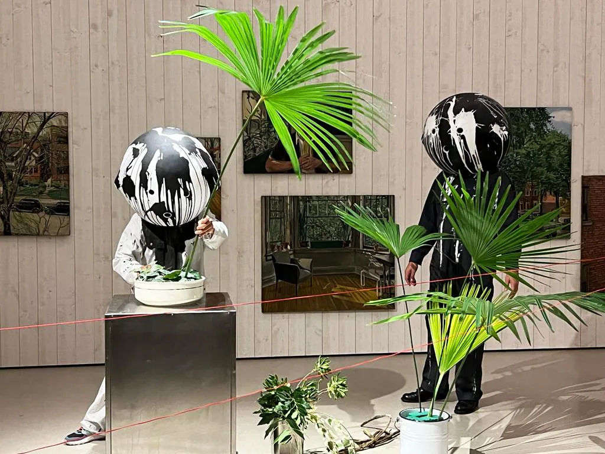
Performance evening with Yoshi + Moshi, Daniel Häller/Christof Zurbuchen and Rochus Lussi, curated by Rochus Lussi.
“Universo Immersivo” Yoshi+ Moshi (Chiasso TI, Switzerland)
The performance “Universo Immersivo” explores the tension between the informative overflow, the dissolution of time and the aesthetics of deceleration. The performers Yoshi + Moshi dive with us into their hyperreality, changing the course of things.
Museum of Nidwalden, Stans, Switzerland / Happen 6 , Thursday, September 1, 2022
article on luzerner zeitung
arttv.ch “summer in the museum”
Nina Staehli: The new monograph / artist book is out now!
Films 2014 – 2024
292 pages
Of course with lots of movies and filmstills from us!
order now nina@ninastaehli.com / chf 69.00